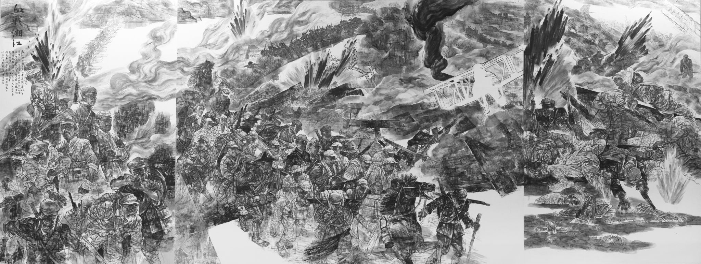
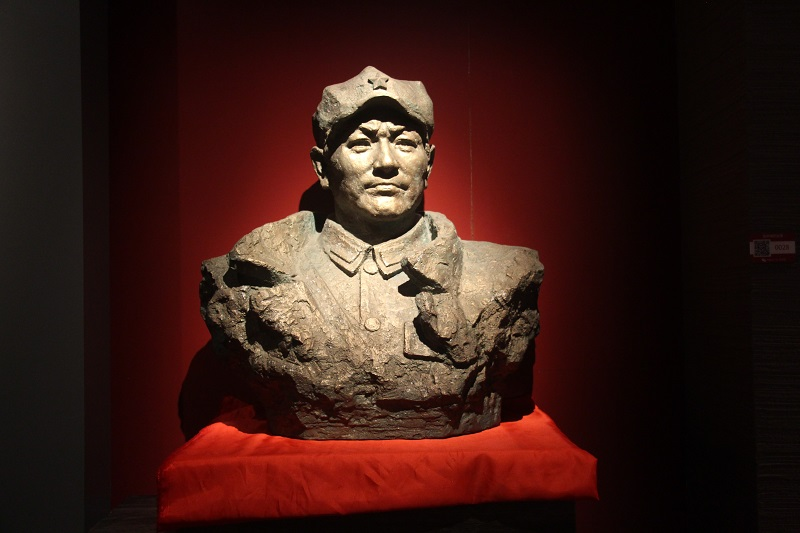
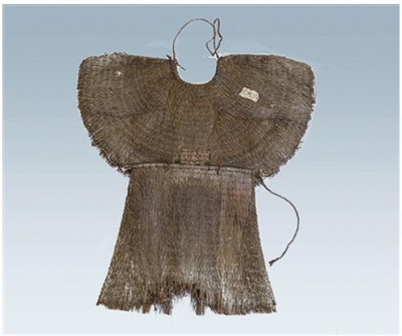

生死湘江
战地日记 · 十四岁的冲锋
在突破第四道封锁线的湘江战役中，年仅14岁的红小鬼赵小二紧紧跟随着主力部队的步伐。天空中，国民党军的飞机轰鸣着俯冲而下，投下的炸弹在清澈的江水中炸开一道道巨大的水柱，江水瞬间被战士们的鲜血染得通红。
面对密集的弹雨和摇晃剧烈的浮桥，赵小二心中没有恐惧，只有一定要冲过去的坚定信念。他亲眼看见身边的战友一个个倒下，但冲锋的号角依然在耳边激荡。他冒着迎面扑来的滚滚浓烟，紧握着手中的钢枪，不顾一切地向前奔跑，年轻的脸庞上写满了超越年龄的坚毅与不怕牺牲的勇敢。

历史档案 · 湘江战役
湘江战役是红军长征出发以来最壮烈的一战。红军将士在浴血奋战中，以巨大的牺牲突破了国民党军精心构筑的第四道封锁线，粉碎了敌人围歼红军于湘江以东的企图。战役中，国民党军调集重兵，并在飞机的疯狂轰炸下，对正渡江的红军发起猛烈进攻。江水被鲜血染红，红五军团三十四师师长陈树湘率领部队绝境断后，苏醒后断肠牺牲。红一军团二师五团政委易荡平也在此役中壮烈牺牲。
血战湘江 · 浮桥冲锋


一级文物：易荡平的蓑衣
红一军团二师五团政委 · 湘江战役遗物
Museum Exhibit Archive